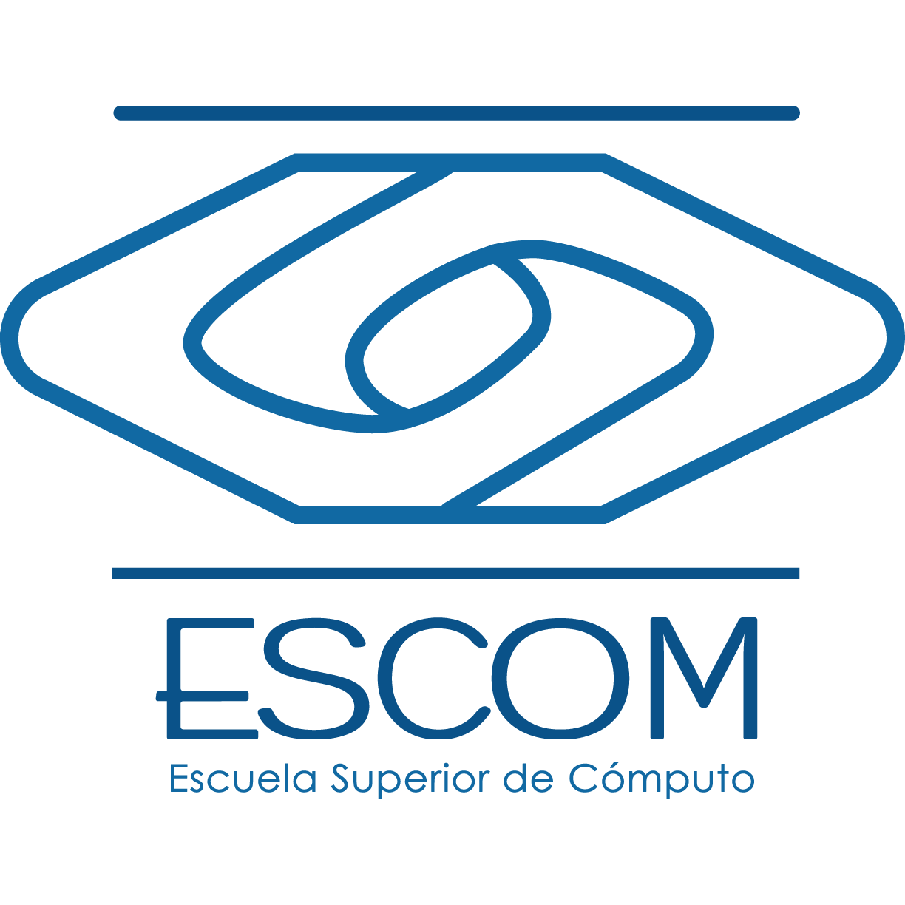

Sobre mí

¡Hola! Soy Ricardo Luna, un apasionado desarrollador web con experiencia
en la creación de soluciones digitales dinámicas y atractivas. Mi viaje
en el mundo de la programación comenzó con mi desarrollo profesional en la carrera de Ingeniería en Software
y Redes en donde obtuve conocimientos de planificacion, desarrollo y gestión de proyectos de Ingeniería
asi como de buenas prácticas durante todo el ciclo de vida del desarrollo de Software.
Para mí es sumamente importante el ser autodidacta ya que, si bien la escuela me brindo conocimientos teoricos sólidos,
el conocimiento de tecnologías de TI y lenguajes de programación lo adquirí en diferentes cursos y certificaciones.
Formación Escolar
Intituto Politécnico Nacional

Curse 5 semestres en la Escuela Superior de Cómputo del Instituto Politécnico Nacional en donde obtuve conocimientos importantes
relacionados a la Ingeniería en Sistemas Computacionales.
Conocimientos adquiridos:
- Programación en C
- Algoritmos y Estructura de Datos
- Ingeniería
Universidad Tecnológica de México
Institución en la que concluí mis estudios en Ingeniería en Software y Redes, titulado de forma
directa al obtener un resultado sobresaliente en el examen de egreso de la licenciatura EGEL ISOFT PLUS.
Conocimientos adquiridos:
- Administración de proyectos de Ingeniería
- Administración de redes CISCO
- Implementación de las fases del Ciclo de Vida del Desarrollo de Software
GENERATION México
Organización sin fines de lucro que tiene como objetivos capacitar de forma técnica a jóvenes para que puedan
ingresar al campo laboral de TI. Cursé un BootCamp con una duración de 6 meses.
Conocimientos adquiridos:
- Desarrollo web
- Front-end
- Back-end
Tecnologías
Mis Certificaciones
- Python Essentials 1 & 2 - Cisco Networking Academy
- CCNA I Introduction to Networks - Cisco Networking Academy
- CCNA II Switching, Routing, and Wireless Essentials - Cisco Networking Academy
- CCNA III Enterprise Networking, Security, and Automation - Cisco Networking Academy
- BootCamp Desarrollador JAVA fullstack - GENERATION México
- Google Data Analytics Professional Certificate - Coursera
- Introduction to Information Technology and AWS Cloud - Coursera